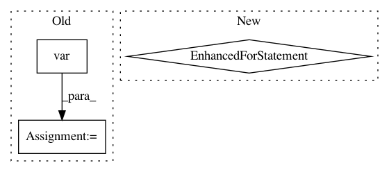

4fb00229644a14226db9028e63e8caba9a0158f2,arviz/stats/diagnostics.py,,gelman_rubin,#Any#Any#Any#,151
Before Change
x = trace[var].values.T
num_samples = x.shape[1]
// Calculate between-chain variance
between_chain_variance = num_samples * np.var(np.mean(x, axis=1), axis=0, ddof=1)
// Calculate within-chain variance
within_chain_variance = np.mean(np.var(x, axis=1, ddof=1), axis=0)
// Estimate of marginal posterior variance
v_hat = (within_chain_variance * (num_samples - 1) / num_samples +
After Change
r_hat = pd.Series(name="Rhat")
for var in varnames:
r_hat[var] = _get_rhat(trace[var].values.T, round_to)
return r_hat
def _get_rhat(values, round_to=2):
In pattern: SUPERPATTERN
Frequency: 3
Non-data size: 3
Instances
Project Name: arviz-devs/arviz
Commit Name: 4fb00229644a14226db9028e63e8caba9a0158f2
Time: 2018-07-08
Author: ColCarroll@users.noreply.github.com
File Name: arviz/stats/diagnostics.py
Class Name:
Method Name: gelman_rubin
Project Name: apache/incubator-tvm
Commit Name: b121278a451243630fb67bf978079a8930de6558
Time: 2020-10-15
Author: mbrookhart@octoml.ai
File Name: tests/python/relay/test_op_level10.py
Class Name:
Method Name: verify_adaptive_pool
Project Name: arviz-devs/arviz
Commit Name: 32692a1ae53d7c5bf36564aeca1b572ddf40f9f0
Time: 2018-06-29
Author: aloctavodia@gmail.com
File Name: arviz/stats/stats.py
Class Name:
Method Name: r2_score